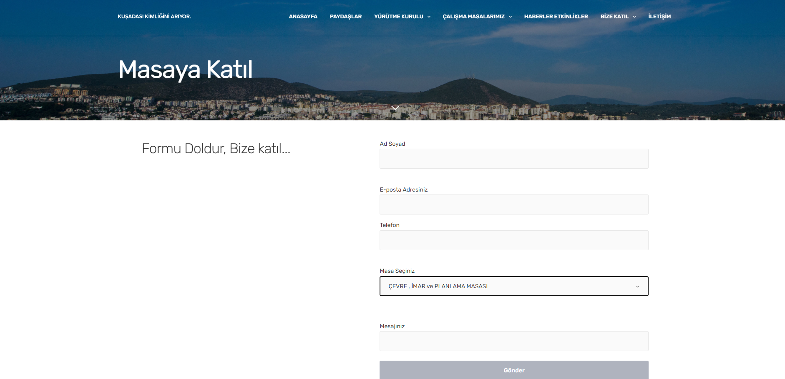
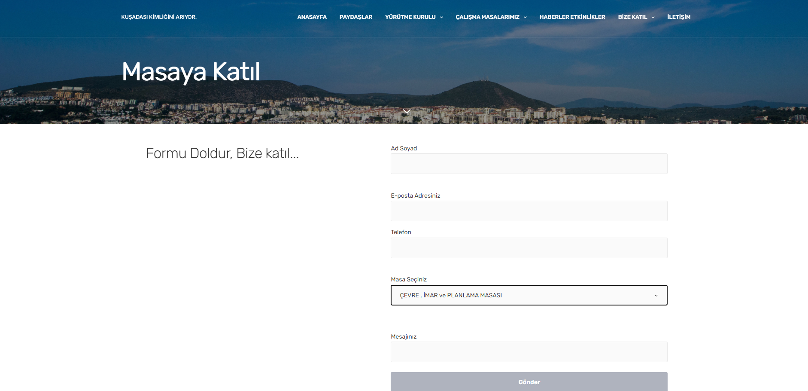

Wordpress Developer
| Category: | Web development |
|---|---|
| Year: | 2023 |
| Team: | Difea Software Team |
| Customer: | Kuşadası City Council |
At its core, this platform is more than just a website; it's a beacon of information, illuminating the vital aspects of community life. Our mission? To ignite conversations and drive positive change in Kuşadası and beyond. From fostering solidarity to championing environmental stewardship, advocating for human rights, and nurturing education, we cover it all. Our goal isn't just to inform but to inspire action. Through captivating exhibitions, impactful school interventions, and engaging YouTube content, we've made waves in the community. We're not just spectators; we're active participants in shaping a brighter tomorrow.
 
